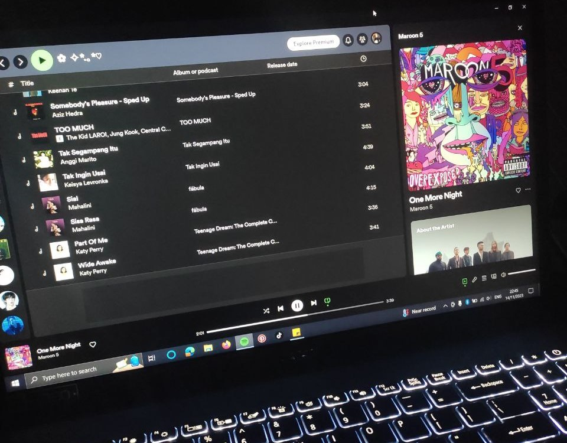
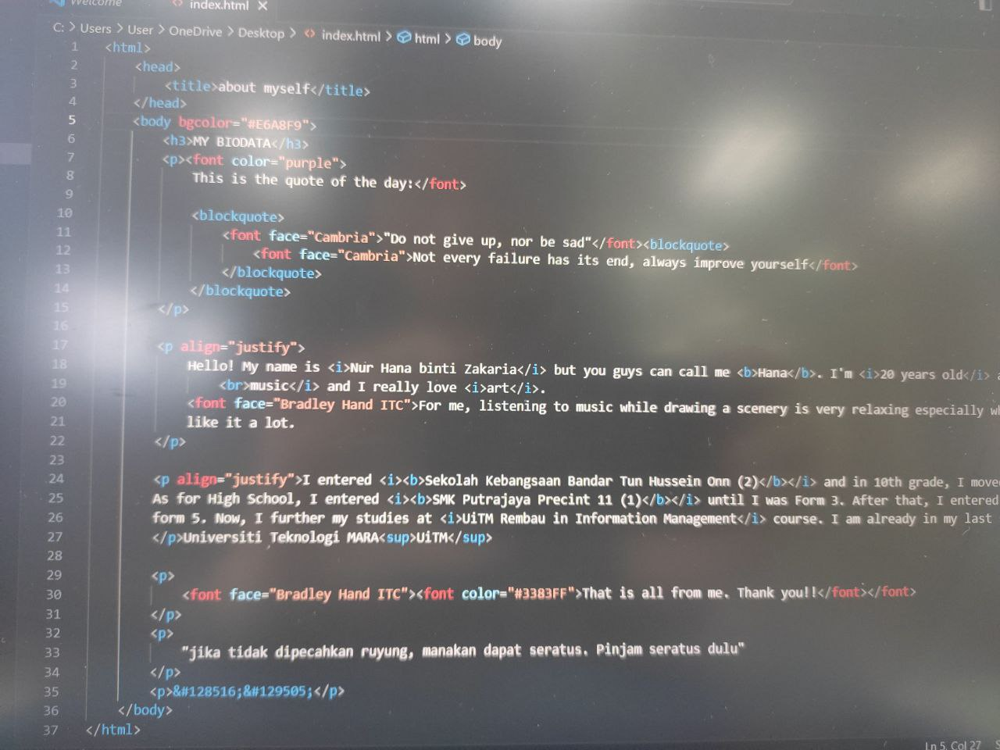

Assalamualaikum and hi! My name is Nur Hana Zakaria, you guys can just call me Hana. I am studying at UiTM Kampus Rembau and now busy preparing for degree studies. Many years of hard working and strict learning have made me a qualified university student in diploma studies with high qualities.
I have a good relationship with my classmates and lecturers as I am quite sociable to the people that I am comfortable with. I am not that active in class but at least I respond in class whenever my lecturer ask questions to us. As for my study, I pay special attention to the development of my thinking manners so that I become quick in thinking
in knowledge. Seeking reality and progress, I performed in my study. I particularly love such subjects such as Coding system, Marketing and also English. I am not really good in logical thinking and oral exercising but I am still improving myself to get use to it. I am quite creative in views on certain manners. I also learned a lot of new things
when I enter university life.
Assalamualaikum and hi! My name is Nur Hana Zakaria, you guys can just call me Hana. I am studying at UiTM Kampus Rembau and now busy preparing for degree studies. Many years of hard working and strict learning have made me a qualified university student in diploma studies with high qualities.
I have a good relationship with my classmates and lecturers as I am quite sociable to the people that I am comfortable with. I am not that active in class but at least I respond in class whenever my lecturer ask questions to us. As for my study, I pay special attention to the development of my thinking manners so that I become quick in thinking
in knowledge. Seeking reality and progress, I performed in my study. I particularly love such subjects such as Coding system, Marketing and also English. I am not really good in logical thinking and oral exercising but I am still improving myself to get use to it. I am quite creative in views on certain manners. I also learned a lot of new things
when I enter university life.
Morally, I may say I am also excellent because I am strict with myself, pushing myself to complete a certain amount of assignments in a short time. This is because when you enter university, there is no such things as "a rest". Every assignment comes each week because we only have 14 weeks for one semester. Our schedule are so pack and whenever I have some free time, I will go to the library to do my assignments little by little. I would not push myself until my limits. With the help of my friends, I can have fun and do my work at the same time. Stress is not something that everyone likes so just a little bit of fun can reduce those stress away. Just trust the process hehehehe.
| Picture |  |
|---|---|
| Description | listening to music (left), coding, computer and Internet (right) |
Visit my social media page
If you have any question, you can go to my email Mail me